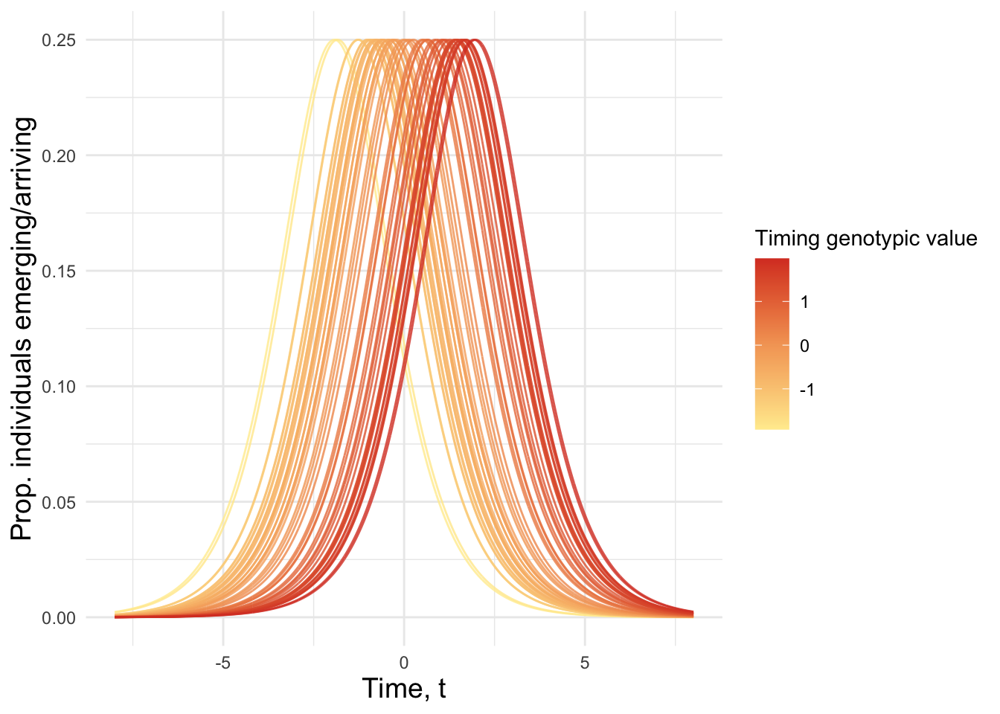
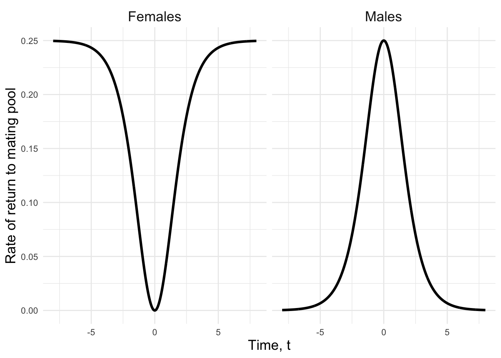
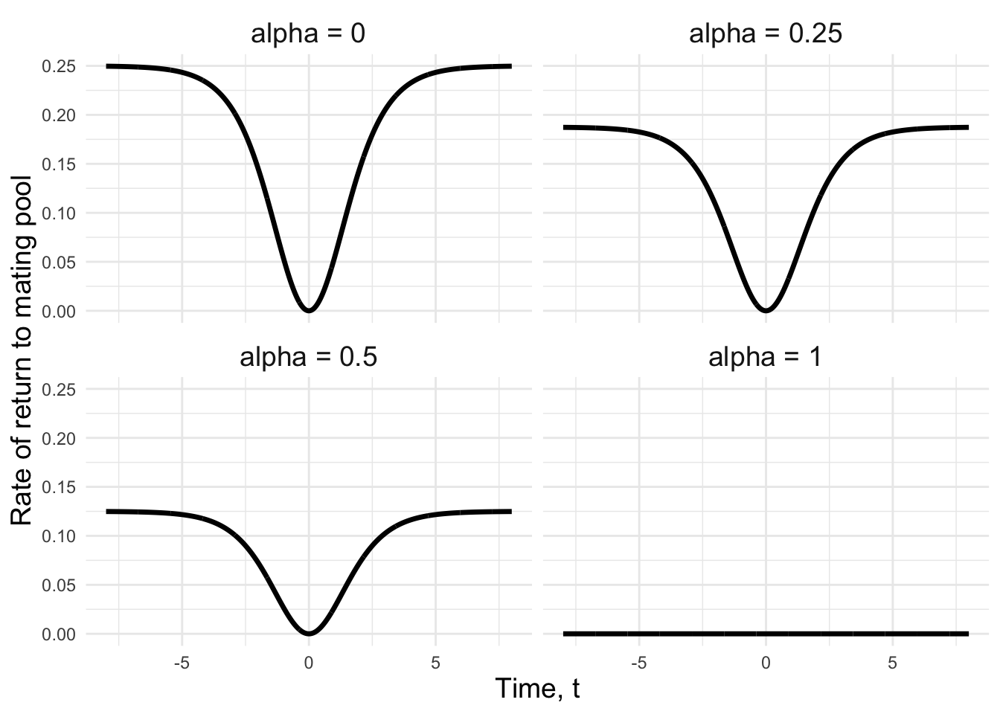
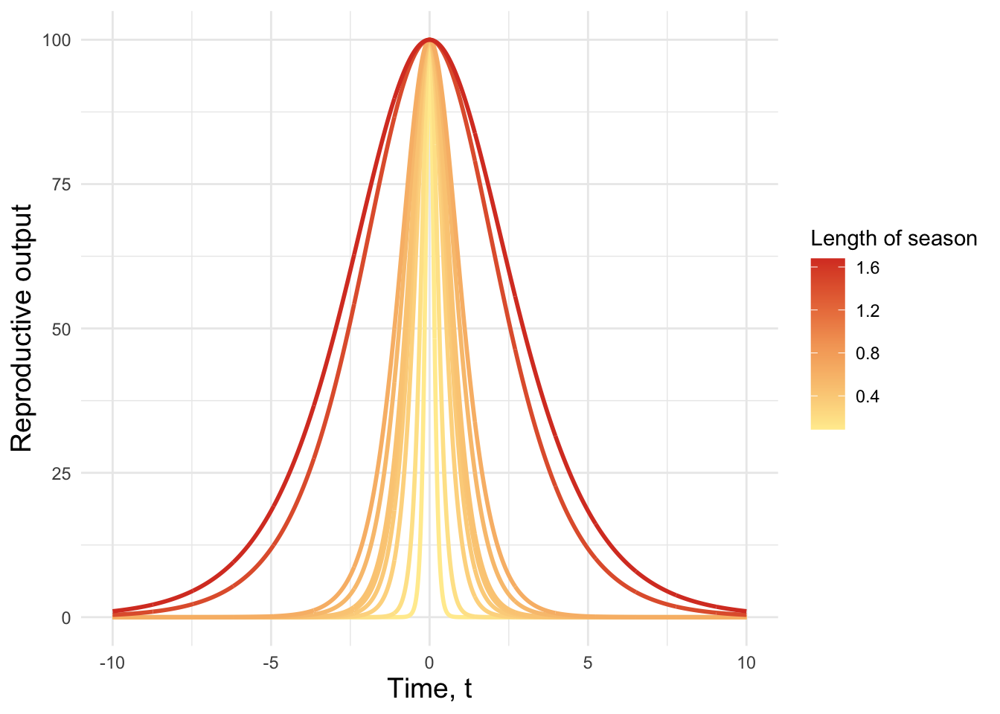
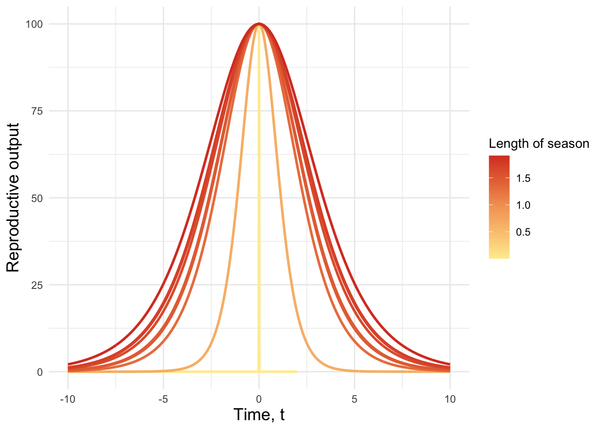
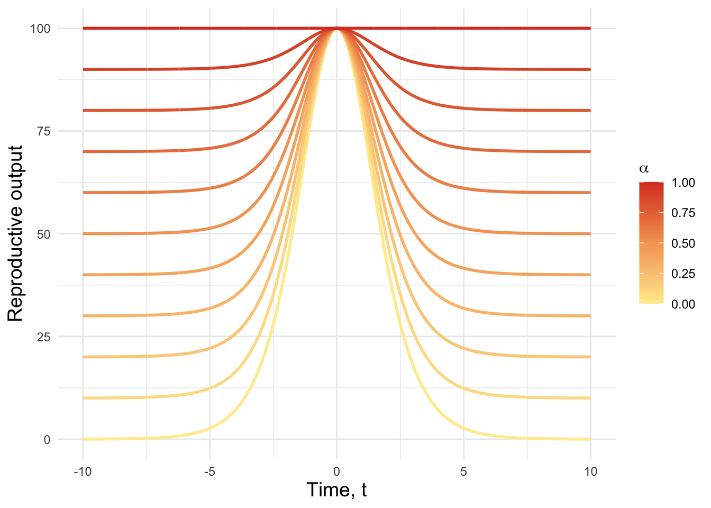

Code
library(tidyverse)
library(stickylabeller)
library(MoMAColors)We assume continuous time, where emergence, mating and death can occur at any real value of t within a generation.
Kawanaphila nartee has an annual lifecycle, where offspring eclose in early spring and all adults die in the summer, making generations discrete.
Fitness is the cumulative number of offspring that survive to breeding age in the next generation (think on this).
Densities of females and males vary continuously
The model considers a temporally and/or spatially varying resource that determines reproductive success from mating at a specific time. For example, females entering the mating pool just as grass trees flower have plenty of resources and high fecundity. Those females entering the mating pool during the kangaroo paw flowering have less resources and lower fecundity. The same argument extends to whether females mature on kangaroo paws or grass trees. But this isn’t a timing problem so we can put it to one side for now.
Males can become sperm/spermatophore depleted. The amount of time they spend replenishing their spermatophore depends on local resource abundance. Males grow their spermatophores to a max size (which individually varies and has proxies which females use to choose/ focus their competition potential mating partners).
The numeric model can be solved to find the hypothetical timing traits that maximise population fitness or the solutions predicted to occur when the sexes coevolve.
Co-evolving traits \(T_\mathrm{F}\) and \(T_\mathrm{M}\) for female and male emergence/development times (these are quantitative characters - genotypic values).
Available individuals form mating pairs using mass-action law (closer term to our field is fertilisation kinetics). That is, the population-wide rate of mating pairs forming at any t is proportional to the product of male and female densities at time t, multiplied with a constant v that characterises male search efficiency.
Individuals are available as mates if they have emerged, are alive and not in time-out. For males, time-out is determined by the length of time taken to replenish their spermatophore, which depends in part on the abundance of resources available. For females, time-out is determined by the resources at their disposable at mating time, t. The closer they are to the resource peak, the slower they return to the mating pool. Each indirectly depends on the abundance of resources available immediately following mating.
At the resource peak, there is no benefit to females mating more than once.
Individuals with trait values \(T_\mathrm{F}\) or \(T_\mathrm{M}\) display an emergence distribution governed by the equations
\[E_\mathrm{M}(t, T_\mathrm{F}) = \frac{e^{t-T_\mathrm{F}}}{(1 + e^{t - T_\mathrm{F}})^2} \tag{1}\]
\[E_\mathrm{M}(t, T_\mathrm{M}) = \frac{e^{t-T_\mathrm{M}}}{(1 + e^{t - T_\mathrm{M}})^2} \tag{2}\]
following Zonnevald and Metz (1991) and Ekrem and Kokko (2023).
\(E_\mathrm{M}(t, T_\mathrm{F})\) and \(E_\mathrm{M}(t, T_\mathrm{M})\) are the numbers of females and males emerging at time t.
I understand how equations work a lot better after plotting them. For some values of t and \(T_i\) let’s see what this function looks like.
expand_grid(t = seq(from = -8, to = 8, by = 0.01),
T_i = runif(50, min = -2, max = 2)) %>%
mutate(Emergence = exp(t - T_i)/(1 + exp(t - T_i))^2) %>%
ggplot(aes(x = t, y = Emergence)) +
geom_line(aes(group = T_i, colour = T_i), alpha = 0.8) +
#scale_color_gradientn(colors=moma.colors("Alkalay2", n =5, override_order = TRUE)) +
scale_color_gradientn(colors=moma.colors("Exter", n =5, override_order = TRUE)) +
labs(y = "Prop. individuals emerging/arriving",
x = "Time, t",
colour = "Timing genotypic value") +
theme_minimal() +
theme(axis.title = element_text(size = 14))
#| '!! shinylive warning !!': |
#| shinylive does not work in self-contained HTML documents.
#| Please set `embed-resources: false` in your metadata.
#| standalone: true
#| viewerHeight: 400
# Load required libraries
library(shiny)
library(dplyr)
library(tidyr)
library(ggplot2)
# Define the UI
ui <- fluidPage(
titlePanel(
div(style = "text-align: center;",
"Emergence time")
),
# Create a layout with the plot and slider stacked vertically
fluidRow(
# Plot in the top row
column(12,
plotOutput("plot"))
),
fluidRow(
# Slider in the row below the plot
column(12,
div(style = "display: flex; justify-content: center;",
sliderInput("T_value",
label = "Genotypic value",
min = -2,
max = 2,
step = 0.2, # Step size for finer adjustments
value = 0)) # Default value for T_i
)
)
)
# Define the Server function
server <- function(input, output) {
# Reactive expression to calculate the necessary data based on T_i
reactive_data <- reactive({
# Let's assume your original code is something like this
T_i <- input$T_value
# Sample computation, replace this with your own calculation
data <- expand_grid(t = seq(from = -8, to = 8, by = 0.01)) %>%
mutate(Emergence = exp(t - T_i)/(1 + exp(t - T_i))^2)
return(data)
})
# Plot output based on the reactive data
output$plot <- renderPlot({
data <- reactive_data()
# Create a plot based on the reactive data
data %>%
ggplot(aes(x = t, y = Emergence)) +
geom_line(alpha = 0.8, linewidth = 1.4, colour = "#d9402a") +
#scale_color_gradientn(colors=moma.colors("Exter", n =5, override_order = TRUE)) +
labs(y = "Prop. individuals emerging/arriving",
x = "Time, t") +
scale_x_continuous(breaks = seq(-8, 8, by = 5)) + # Set x-axis ticks and labels
scale_y_continuous(breaks = seq(0, 0.25, by = 0.05)) +
theme_minimal() +
theme(axis.title = element_text(size = 20))
})
}
# Run the Shiny app
shinyApp(ui = ui, server = server)
Mating dynamics are followed over one breeding season. The sexes encounter one another with search efficiency \(v\), where higher values indicate efficient mate finding. Males die with rate \(\mu_\mathrm{M}\) and females with rate \(\mu_\mathrm{F}\).
Ekrem and Kokko (2023) consider a population where a male can become sperm-limited. Should we use a similar approach? Sperm-limitation (imposes sexual selection on females) and the constraints imposed by the spermatophore (imposes natural selection on females) are separate processes producing mate limitation for females. Whether sperm-limitation ever matters in this species is a matter for debate.
Here, I write equations to describe the structure of the adult population following a time-in, time-out mating framework. Females arrive in the time-in state and once mated move to the time-out state. Males require resources to produce a spermatophore and therefore arrive in the time-out state. The sexes then have specific rates – \(\delta_\mathrm{F}(t)\) and \(\delta_\mathrm{M}(t)\) – at which they transition back into the mating pool. These rates depend on the amount of resources available at the time of the just-completed mating. Males return to the mating pool at rate
\[\delta_\mathrm{M}(t) = \frac{x_\mathrm{M}e^{t/L}}{(1 + e^{t/L})^2} \tag{3}\] where the variable \(L\) determines the length of the season. When \(L\) is small, reproductive success declines quickly as the temporal mismatch with the resource peak increases. Refactory periods are lowest when resource availability is high. If mating occurs at the resource peak, the rate of re-entering the mating pool is \(x_\mathrm{M}e^0/(1 + e^0)^2 = \frac{x_\mathrm{M}}{4}\), where \(x_\mathrm{M}\) determines the efficiency of spermatophore regeneration across the population, or in other words, the maximum rate of return to the mating pool. The length of the refractory period for females is governed by the rate
\[ \delta_\mathrm{F}(t) = \frac{x_\mathrm{F}}{4} - \frac{x_\mathrm{F}e^{t/L}}{(1 + e^{t/L})^2} - \alpha(\frac{x_\mathrm{F}}{4} - \frac{x_\mathrm{F}e^{t/L}}{(1 + e^{t/L})^2}) \tag{4}\]
where \(x_\mathrm{F}\) determines the efficiency of oogenesis for a given resource abundance, or, once again, the maximum rate of return to the time-in state. The second term in Equation 4 captures the decline in the rate of return to the mating pool caused by greater parental attributed to resources gathered from the environment. The third term is the reduction in the rate of return caused by greater parental expenditure achieved by consuming a spermatophore during mating, where controls the nutritional value of the spermatophore. When resources are scarce, females can provision fewer eggs and therefore return to the mating pool at a higher rate. As resources become abundant, females can provision more eggs, increasing the amount of time they spend out of the mating pool egg laying. Male and female refractory periods thus plastically respond in exactly opposite ways to resource abundance at the time a mating is completed.
When \(x_\mathrm{F} = x_\mathrm{M} = 1\), \(L = 1\) and spermatophores have no nutritional value (\(\alpha\) = 0), rates of return to the mating pool are distributed across time like so:
expand_grid(t = seq(from = -8, to = 8, by = 0.01),
x = 1) %>%
mutate(Males = x*exp(t)/(1 + exp(t))^2,
Females = x/4 - x*exp(t)/(1 + exp(t))^2) %>%
pivot_longer(cols = 3:4, values_to = "Rate of return to mating pool", names_to = "Sex") %>%
ggplot(aes(x = t, y = `Rate of return to mating pool`)) +
geom_line(alpha = 1, linewidth = 1.2) +
labs(y = "Rate of return to mating pool",
x = "Time, t",
colour = "Timing trait value") +
facet_wrap(~Sex) +
theme_minimal() +
theme(strip.text = element_text(size = 14),
axis.title = element_text(size = 14))
If spermatophores have nutritional value, \(\delta_\mathrm{F}\) looks like this:
expand_grid(t = seq(from = -8, to = 8, by = 0.01),
x = 1,
a = c(0, 0.25, 0.5, 1),
L = 1) %>%
mutate(Females = x/4 - x*exp(t)/(1 + exp(t))^2 - (a * (x/4 - (x*exp(t / L)/(1 + exp(t / L))^2)))) %>%
#pivot_longer(cols = 5, values_to = "Rate of return to mating pool", names_to = "Sex") %>%
ggplot(aes(x = t, y = Females)) +
geom_line(alpha = 1, linewidth = 1.2) +
labs(y = "Rate of return to mating pool",
x = "Time, t",
colour = "Timing trait value") +
facet_wrap(~a, nrow = 2, labeller = label_glue(paste0(expression(alpha), " = {a}"))) +
theme_minimal() +
theme(strip.text = element_text(size = 14),
axis.title = element_text(size = 14))
With terms to govern dynamic potential mating rates for both sexes, we now need a set of equations which describe the frequency of individuals in each mating state at time \(t\). Let \(f_0\) and \(m_0\) equal the number of mature females and males that are receptive to mating (in time-in), respectively. \(f_1\) and \(m_1\) represent the number of mature females and males that are unreceptive to mating (in time-out).
\[\begin{equation} \left\{ \begin{aligned} \frac{df_0}{dt} &= E_\mathrm{F}(t, T_\mathrm{F}) -vm_0(t)f_0(t) - \mu_\mathrm{F}f_0(t) + \delta_\mathrm{F}f_1(t) \\ \frac{df_1}{dt} &= vm_0(t)f_0(t) - \mu_\mathrm{F}f_1(t) - \delta_\mathrm{F}f_1(t) \\ \frac{dm_0}{dt} &= -vm_0(t)f_0(t) - \mu_\mathrm{M}m_0(t) + \delta_\mathrm{M}(t)m_1(t) \\ \frac{dm_1}{dt} &= E_\mathrm{M}(t, T_\mathrm{M}) + vm_0(t)f_0(t) - \mu_\mathrm{M}m_1(t) - \delta_\mathrm{M}(t)m_1(t) \end{aligned} \right. \end{equation}\]{#eq-dynamics}
Resources become available at some time before \(t = 0\), resource abundance peaks at \(t = 0\) and resources decline thereafter.
The decline in resource abundance is not so relevant for K. nartee, as the first heatwave of the warm months kills most to all adults. At this time, resource abundance is usually still high. Nevertheless this is an inherently unpredictable event, so some bet-hedging might be involved here.
Following Ekrem and Kokko (2023), we model reproductive success, \(R(t)\), using the same functional form for the environment as for the emergence time and refractory period distributions defined above. We write reproductive success after mating at time \(t\) as
\[R(t) = \frac{x_\mathrm{F}e^{t/L}}{(1 + e^{t/L})^2}\] If we set \(x_\mathrm{F} = 400\), reproductive output across the season looks like this:
expand_grid(t = seq(from = -10, to = 10, by = 0.01),
L = runif(10, 0, 2)) %>%
mutate(`Reproductive output` = 400*exp(t / L)/(1 + exp(t / L))^2) %>%
ggplot(aes(x = t, y = `Reproductive output`)) +
geom_line(aes(group = L, colour = L), linewidth = 1) +
scale_color_gradientn(colors=moma.colors("Exter", n =5, override_order = TRUE)) +
coord_cartesian(xlim = c(-10, 10)) +
labs(y = "Reproductive output",
x = "Time, t",
colour = "Length of season") +
theme_minimal() +
theme(axis.title = element_text(size = 14))
However, \(R(t)\) is also affected by the nutrient content of the spermatophore a female consumes during mating. With this in mind, reproductive success can be rewritten as
\[R(t) = \frac{x_\mathrm{F}e^{t/L}}{(1 + e^{t/L})^2} + \alpha(\frac{x_\mathrm{F}}{4} - \frac{x_\mathrm{F}e^{t/L}}{(1 + e^{t/L})^2})\]{#eq-repro},
where the second term on the right hand side describes the importance of spermatophores as a resource at time \(t\). The \(\alpha\) parameter controls the magnitude of fecundity increase attributed to the spermatophore, relative to resources available via other paths. If \(\alpha = 1\) (note this is unrealistically large), each spermatophore consumed when no other resources are available provides the same benefit to fecundity as does timing reproduction perfectly with the temporal resource peak. The second term in the equation moderates the Bateman gradient such that the effect of resource availability on fecundity negatively correlates with the effect of spermatophore consumption on fecundity. When \(t = 0\) this second term equals zero i.e. there are no fecundity benefits from spermatophore ingestion.
For various values of \(\alpha\) fecundity at time \(t\) becomes:
expand_grid(t = seq(from = -10, to = 10, by = 0.01),
L = runif(10, 0, 2),
a = seq(from = 0, to = 1, by = 0.1)) %>%
mutate(`Reproductive output` = 400*exp(t / L)/(1 + exp(t / L))^2 +
(a * (100 - (400*exp(t / L)/(1 + exp(t / L))^2)))) %>%
ggplot(aes(x = t, y = `Reproductive output`)) +
geom_line(aes(group = L, colour = L)) +
scale_color_gradientn(colors=moma.colors("Exter", n =5, override_order = TRUE)) +
coord_cartesian(xlim = c(-10, 10)) +
facet_wrap(~a, nrow = 3, labeller = label_glue(paste0(expression(alpha), " = {a}"))) +
labs(y = "Reproductive output",
x = "Time, t",
colour = "Length of season") +
theme_minimal() +
theme(axis.title = element_text(size = 14))
Let’s take a closer look at how varying \(\alpha\) effects female egg production by setting \(L = 1\) and plotting reproductive output for different values of \(\alpha\) on a single panel.
expand_grid(t = seq(from = -10, to = 10, by = 0.01),
L = 1,
a = seq(from = 0, to = 1, by = 0.1)) %>%
mutate(`Reproductive output` = 400*exp(t / L)/(1 + exp(t / L))^2 +
(a * (100 - (400*exp(t / L)/(1 + exp(t / L))^2)))) %>%
ggplot(aes(x = t, y = `Reproductive output`)) +
geom_line(aes(group = a, colour = a), linewidth = 1) +
scale_color_gradientn(colors=moma.colors("Exter", n =5, override_order = TRUE)) +
coord_cartesian(xlim = c(-10, 10)) +
#facet_wrap(~a) +
#facet_wrap(~a, nrow = 3, labeller = label_glue(paste(expression(alpha), " = {a}"))) +
labs(y = "Reproductive output",
x = "Time, t",
colour = expression(alpha)) +
theme_minimal() +
theme(axis.title = element_text(size = 14))
Importantly, our model departs from that of Ekrem and Kokko (2023) in that we allow females to mate multiply, with each mating event followed by a bout of reproduction. The total reproductive success of a female that mates at least once is
\[W_\mathrm{F} = \sum_{i = 1}^{n}{R(\mathrm{times}_i)}\]{eq-f_fitness}
where times is a vector of mating times with length \(n\).
Male fitness depends on whether we include sperm competition. At its simplest there is no sperm competition, and each female reproductive bout exclusively produces the progeny of the male she most recently mated with.